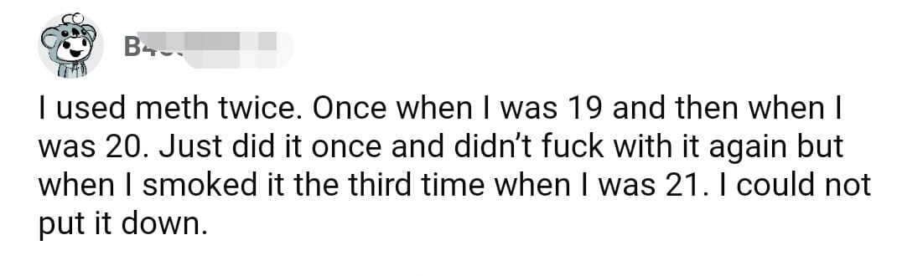

Post 951
Nov 13, 2021 4:56:38pm

Mobile uploads
This is a very common storyline of meth addiction. Being addicted to meth is the probably the most powerful addiction I have ever witnessed.
Back to Index